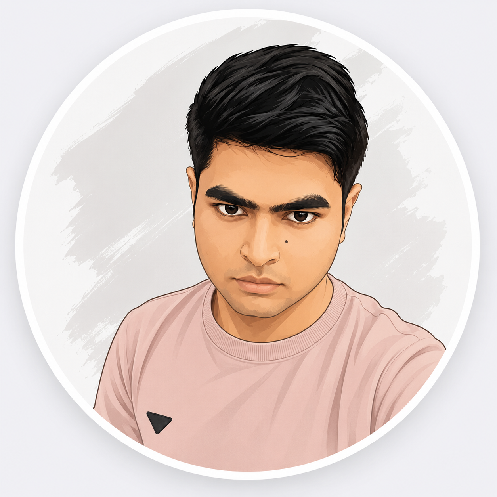

Gyan Ranjan
Building AI products that solve real-world problems.
Currently pursuing B.Tech in Information Technology at IIEST Shibpur. I enjoy building AI-powered applications, backend systems, and intelligent software that solve real-world problems.

Engineering Case Studies
A detailed breakdown of product architecture, key design patterns, and engineering decisions.
RepoMind
AI-Powered Repository Analysis Platform
RepoMind is a developer-focused platform that enables engineering teams to instantly map, explain, and query unfamiliar codebases using Retrieval-Augmented Generation (RAG).
Software engineers spend up to 70% of their time reading and understanding code rather than writing it. Static search tools fail to capture the logical flow, design patterns, and architectural context of unfamiliar repositories, causing significant friction in developer onboarding and task resolution.
A scalable RAG system that ingests entire GitHub repositories, parses code structures into a custom Abstract Syntax Tree (AST) tree, stores semantic code chunk embeddings in a persistent Qdrant vector database, and processes queries using a multi-query expansion pipeline with Gemini embeddings to generate contextual, accurate architectural explanations.
Key Features
.png)
.png)
.png)
.png)
* Query expansion LLM
| Decision | Chosen Tech | Alternatives | Trade-offs & Rationale |
|---|---|---|---|
| AI Backend Engine | FastAPI (Python) | Node.js / Express, Go |
Trade-off: Python has higher memory usage and execution latency compared to Go, but provides native integration with ML libraries.
Benefits: Seamless interoperability with Python's rich AI ecosystem (LangChain, Hugging Face, NumPy) and auto-generating OpenAPI documentation.
Limitations: Single-threaded event loop requires delegating parsing jobs to background worker processes to prevent blocking.
|
| Vector Database | Qdrant | FAISS, Pgvector |
Trade-off: FAISS is in-memory only and lacks metadata filtering; Pgvector requires complex SQL schema setups for dynamically structured vector queries.
Benefits: Provides native REST/gRPC interfaces, horizontal scaling, payload filtering, and high search performance for code semantic embeddings.
Limitations: Requires deploying and maintaining an independent database cluster, adding infrastructure overhead.
|
| Language Models & Embeddings | Gemini 1.5 Flash | OpenAI GPT-4o, Claude 3.5 Sonnet |
Trade-off: Gemini has slightly less code-generation reasoning precision than Claude 3.5 Sonnet, but offers drastically lower costs.
Benefits: Massive 1M+ token context window permits ingestion of massive codebases without fragmenting memory state.
Limitations: API access can suffer from rate-limits on standard tiers, requiring client-side throttling.
|
A major challenge was naive text chunking breaking code syntax. Standard split-by-character algorithms sliced functions in half, stripping import contexts and making generated embeddings useless. To resolve this, I implemented an AST-aware custom chunker. It identifies logical blocks (classes, functions, methods) and appends parent file headers, directory trees, and dependencies to each chunk prior to embedding.
Through RepoMind, I realized that RAG quality depends entirely on chunk preparation and structural metadata rather than just LLM power. A clean, syntax-aware database yield increases code-matching relevance by over 40%.
- Implement AST-based cross-file dependency graph indexing to resolve import networks.
- Add support for real-time repository syncing using GitHub Webhooks.
- Integrate local LLMs (Ollama) to allow offline codebase analysis.
DocOnCall
AI-Powered Healthcare Assistance Platform
DocOnCall is an intelligent medical companion that bridges the gap between patient symptoms, medical reports, and clinical consultation.
Patients frequently struggle to interpret technical medical reports, leading to anxiety or improper self-medication. Additionally, doctors spend valuable consultation minutes asking standard screening questions that could be automated during pre-consultation.
A modern MVC-based healthcare platform offering symptom analysis, medical PDF report summarization using large language models, and patient-doctor routing. The system uses a fast Node.js backend to support seamless API interactions and stores patient histories securely.
Key Features
.png)
.png)
.png)
.png)
.png)
.png)
| Decision | Chosen Tech | Alternatives | Trade-offs & Rationale |
|---|---|---|---|
| Application Server | Node.js with Express | Python Django, Ruby on Rails |
Trade-off: Express lacks a built-in ORM, admin panel, or standardized architecture, requiring manual structure design (MVC).
Benefits: Extremely lightweight and fast for high-concurrency patient dashboards and chat WebSockets; unified JavaScript syntax.
Limitations: Single-threaded nature means heavy calculation tasks must be offloaded to keep routes responsive.
|
| Database | MongoDB | PostgreSQL, MySQL |
Trade-off: Relational systems offer stronger ACID compliance, but schema updates are slow and rigid.
Benefits: Polymorphic document schemas perfectly store dynamic medical reports and unstructured symptom checklists without migration.
Limitations: Complex joins or aggregations require careful structuring of references.
|
| Inference Engines | Groq & Gemini API | OpenAI GPT-4 |
Trade-off: Maintaining two API keys increases complexity, but yields optimal speed and cost profiles.
Benefits: Groq (Llama-3) provides sub-100ms response speeds for chats, while Gemini parses multi-page medical PDF files and extracts JSONs.
Limitations: Groq has lower rate limits on free developer keys, requiring fallback logic.
|
Handling medical document summarization securely. Transferring medical documents directly to AI APIs without validation posed security risks. To address this, I built a local validation pipe that extracts text, redacts identifiable patient details (PII) like names and phone numbers via regex before sending the data to external LLMs.
When building AI applications in fields like healthcare, establishing rigid boundaries is crucial. I configured the LLM's system prompts to emphasize that it provides analytical summaries and screening inputs, rather than formal clinical diagnoses.
- Integrate WebRTC for encrypted real-time video consultations directly on the portal.
- Add integrations with health metrics APIs (Fitbit, Google Fit) for chronic symptom tracking.
- Implement multi-lingual voice analysis for hands-free symptom checking.
Currently Building: RepoMind
Focus: Evaluation Frameworks & Ingestion Speed
Latest Update: Optimized AST-aware chunking pipeline to support typescript and python repositories recursively.
Next Milestone: Implement parallel indexing workers using Celery and Redis to speed up massive repository parsing.
Milestones & Growth
A timeline of project milestones, academic entries, and building history.
Entered IIEST Shibpur
Began pursuing a B.Tech in Information Technology. Joined active student communities, including CodeIIEST, EDC, and DebSoc, to collaborate with fellow engineers.
Won HackSprint Hackathon
Awarded 'Best First-Year Team' at the HackSprint Hackathon, demonstrating problem-solving, rapid prototyping, and teamwork under time constraints.
Built & Deployed 5+ AI & Full-Stack Apps
Developed and shipped multiple systems combining backend technologies with neural networks, focusing on building practical software that solves real-world needs.
Deployed RepoMind on Production
Built and launched RepoMind, an AI-powered GitHub analyzer leveraging FastAPI, Qdrant, and Gemini. Set up robust chunking, caching, and database schemas.
Seeking AI Engineering Internship
Actively looking for AI Engineering, Backend, or Software Engineering Internships where I can contribute to shipping production code and building AI pipelines.
Building Meaningful Technology
Focused on developing core developer tooling, LLM integrations, and scalable architectures that address genuine challenges.
Pragmatic AI & Backend Engineering
How I approach software design, building applications, and writing systems.
I've been fascinated by computers since childhood—not just how they work, but how they can improve people's lives.
That curiosity eventually became programming when I realized I could build the applications I admired. Since then, I've focused on creating software that solves real-world problems rather than just completing tutorial projects.
Today I primarily build AI-powered applications, backend systems, and developer tools while continuously improving my software engineering skills. Long term, I want to build technology that genuinely matters.
Academic Foundation
Pursuing B.Tech in Information Technology at Indian Institute of Engineering Science and Technology (IIEST), Shibpur. Current CGPA: 9.22+ (Expected Graduation: 2029).
My Approach to Code
- Builds complete end-to-end AI applications.
- Deploys projects instead of leaving them unfinished.
- Enjoys understanding backend architecture and production systems.
- Learns by building increasingly difficult software.
- Focuses on solving real problems instead of cloning existing products.
Technical Focus Areas
Engineering Principles
Simple guidelines I follow when designing, writing, and refactoring codebase systems.
Build before optimizing
Get it working, understand the bounds, then optimize bottlenecks based on real data rather than assumptions.
Simple > Clever
Write readable, maintainable code. Over-engineering creates complexity debt that slows down development.
Ship > Perfect
Working software in production provides feedback. Polishing in isolation delays discovery of real issues.
Solve real problems
Focus on building tools that address actual user needs or engineering friction, rather than cloning existing tutorials.
Technical Infrastructure
My skills and languages mapped across key software engineering domains.
AI Engineering
Backend Engineering
Frontend Engineering
Dev Tools & Architecture
Other Software Applications
Additional experiments, models, and prototypes built to explore specific algorithms or frameworks.
Plant Disease Classifier
CompletedDeep learning application using PyTorch to analyze crop leaves and diagnose plant diseases. Accelerates farm inspection by automating disease identification.
Anime Recommendation System
CompletedCollaborative and content-based recommendation system that suggests media matches based on user watch histories and ratings metadata.
Bengaluru House Price Prediction
CompletedMachine learning regression model trained on location, sizing, and amenities data to predict property prices in Bengaluru.
SweetSuite Property Platform
CompletedFull-stack real estate dashboard and property management platform facilitating bookings and rentals.
Achievements & Metrics
Key indicators of problem-solving expertise and academic consistency.
Problems Solved
Algorithmic challenges solved across LeetCode, Codeforces, and CodeChef.
Current CGPA
Academic excellence in Information Technology at IIEST Shibpur.
HackSprint Hackathon
Awarded 'Best First-Year Team' for building and pitching a functional prototype.
Codeforces Rating
Active competitive programmer demonstrating strong problem-solving skills under time limits.
Let's build something meaningful.
I am actively looking for AI Engineering, Backend, or Software Engineering Internships. Whether you want to audit RAG ingestion pipelines, accelerate LLM inference speeds, or construct server frameworks—I am ready to ship.